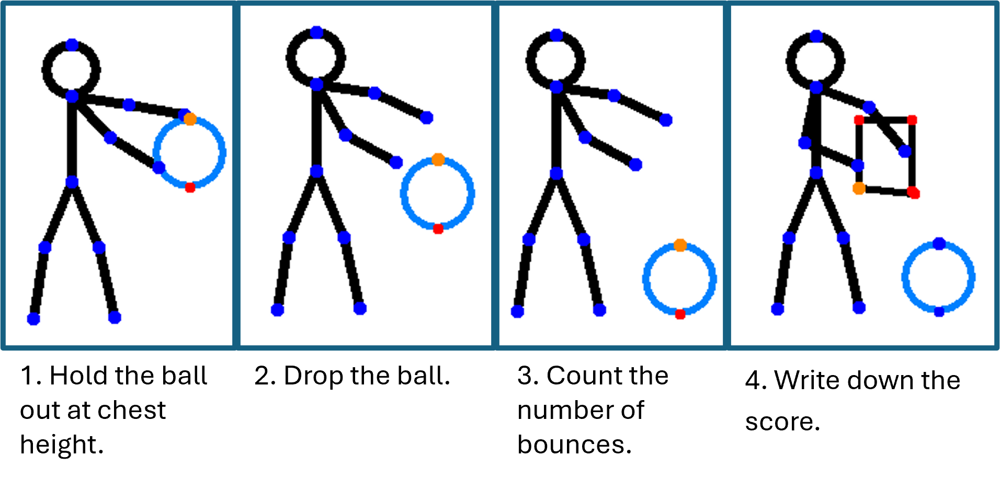
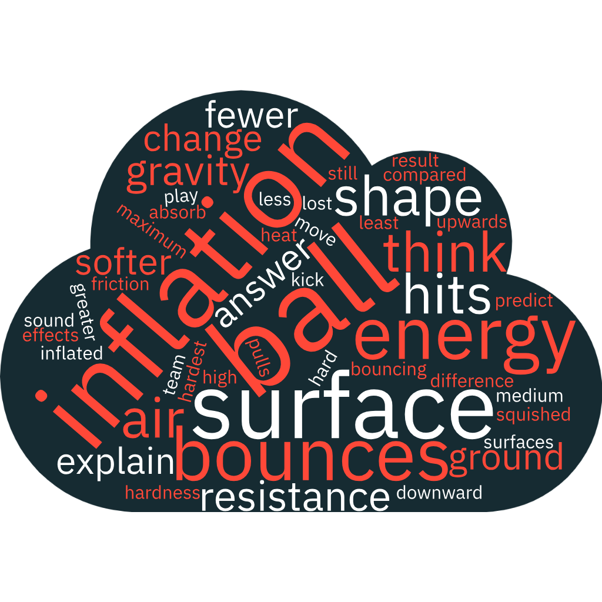

Introduction
Hi Team, we need to work out what inflation does to the ball, and to help our players find a good amount of inflation for the big game.

Experiment Outline
Active Experiment
Follow the steps below to conduct the experiment on each surface.
We’re going to do this drill 5 times. Our average will be the most common number of bounces. Circle which ball and surface you are using. Remember to write your scores down.
Spend 5 minutes collecting data on each surface for two balls. Once you have collected the datapoints write down the mean average and move to the next surface. The 5 minute timer is for each surface, if you finish a surface early - no worries just restart the timer.
Data Table
Use the dropdowns to select the inflation of the ball and the surface you used. Then enter the number of bounces you counted.
| Football Inflation | Surface | Number of Bounces | |
|---|---|---|---|
Graph Plotting
Now that you have collected your data, it’s time to plot it on a graph. Use the data you collected to plot the number of bounces against the inflation of the ball.
Graph
Take 5 minutes to discuss the below questions in your groups.
Questions
Explain how the inflation of the ball effects the number of bounces? Can you predict which ball would be best to score a penalty with? Explain your answer.
Sketch what happens to the ball when it hits the ground. Why do you think this happens?

Why do you think the surface changes how much the ball bounces? What surface do you think the team should play on?